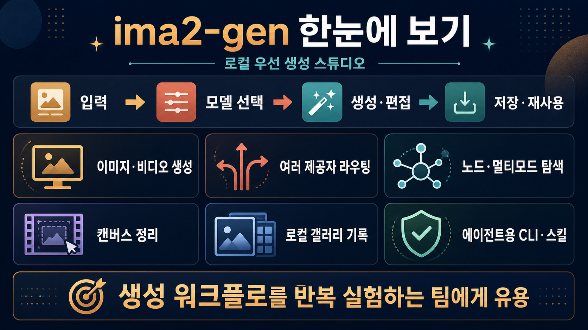

텍스트, 참조 이미지, 편집, 영상 생성까지 한 런타임에서 다루며 결과를 로컬 히스토리에 남깁니다.

lidge-jun/ima2-gen생성 실험을
생성 실험을
로컬에서 굴리는 스튜디오
이미지·비디오 생성, 편집, 브랜칭, 히스토리 저장을 한 화면과 CLI에서 다루는 로컬 우선 visual generation runtime입니다.
누구에게 좋나AI 이미지·영상 결과를 반복 비교하고, 프롬프트·참조·모델 경로를 잃지 않고 관리하려는 제작자와 에이전트 워크플로 팀
한 줄 판단단순 생성기보다 “여러 제공자 + 로컬 기록 + 노드식 탐색”을 묶은 작업대에 가깝습니다.
먼저 볼 것Node 22 이상, 인증 방식, 기본 모델 설정, 실제 과금/크레딧 경로를 자기 환경에서 먼저 확인해야 합니다.
GPT OAuth/API, Grok, Gemini, Antigravity, MCP 연동을 lane 단위로 고르고 기본값도 fail-closed로 관리합니다.
좋은 결과를 가지치기하거나 같은 프롬프트를 여러 슬롯으로 비교해 실험 루프를 빠르게 돌립니다.
줌, 주석, 지우개, 배경 정리, 투명 프리뷰로 결과물을 다음 생성의 재료로 다듬을 수 있습니다.
생성 결과와 메타데이터를 세션 단위로 저장하고, 다시 선택·복사·연장하는 흐름을 지원합니다.
ima2 CLI와 bundled skill 문서가 있어 코딩 에이전트가 생성 파이프라인을 재사용하기 쉽습니다.